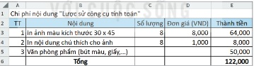
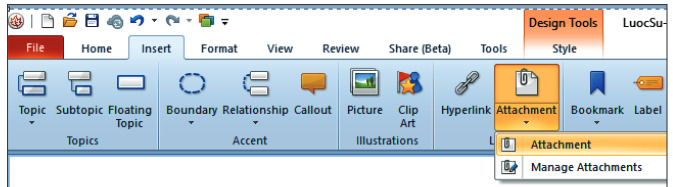
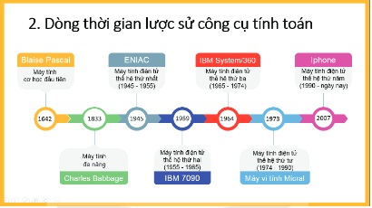

Dành cho giáo viên
Theo dõi lớp
| Học sinh / Nhóm | Đã nộp | Cập nhật |
|---|
Bước 1
1 Khởi động
Khám phá Hình ảnh khởi động
Trò chuyện Cùng An, Minh và Khoa
Đoạn trò chuyện gợi mở (không có trong SGK)
Minh: Bài trình bày của nhóm mình toàn chữ, các bạn nghe dễ buồn ngủ.
An: Thêm sơ đồ tư duy, biểu đồ, hình ảnh và một đoạn video ngắn đi!
Khoa: Nhưng dùng sao cho hợp lí, đúng chỗ thì mới hiệu quả.
An: Thêm sơ đồ tư duy, biểu đồ, hình ảnh và một đoạn video ngắn đi!
Khoa: Nhưng dùng sao cho hợp lí, đúng chỗ thì mới hiệu quả.
Khởi động Nhớ lại Bài 7
Trong Bài 7 em đã biết cách sử dụng sơ đồ tư duy và bài trình chiếu trong trao đổi và hợp tác, biết cách sử dụng hình ảnh, biểu đồ và video hợp lí. Bài học này hướng dẫn em tạo sơ đồ tư duy có dữ liệu đính kèm và bài trình chiếu sử dụng hình ảnh, biểu đồ, video hợp lí, đồng thời thực hành sử dụng chúng trong trao đổi, hợp tác.
Ghi bài Khởi động
Sau khi thầy cô chốt, em chép nội dung dưới đây vào vở.
Bước 2 · Thực hành
2.1 Nhiệm vụ 1. Sử dụng phần mềm tạo sơ đồ tư duy có đính kèm dữ liệu
Chuẩn bị Dữ liệu đính kèm
Sử dụng phần mềm tạo sơ đồ tư duy như minh hoạ trong Hình 7.1 với dữ liệu đính kèm đã chuẩn bị hoặc được cung cấp:
- Tệp bảng tính KinhPhi.xlsx để tính toán chi phí triển lãm (Hình 8.1).
- Tệp hình ảnh Pascaline.png minh hoạ cho máy tính cơ học Pascaline.
- Tệp văn bản CharlesBabbage.docx chứa tiểu sử nhà khoa học Charles Babbage.
- Đường liên kết đến video về nhà khoa học Charles Babbage trên Internet.

Thực hành Tạo sơ đồ, đính kèm tệp và liên kết
a) Tạo sơ đồ tư duy: khởi động MindMaple Lite, tạo sơ đồ với chủ đề chính và các nhánh như Hình 7.1, lưu với tên LuocSu.emm.
b) Đính kèm tệp: chọn nhánh cần đính kèm → Insert/Attachment/Attachment (Hình 8.2) → chọn tệp trong hộp thoại Open → Open. Biểu tượng tệp đính kèm xuất hiện ở nhánh của sơ đồ.
c) Đính kèm đường liên kết: chọn nhánh → Insert/Hyperlink → sao chép đường liên kết đến video vào ô Link to → OK.
b) Đính kèm tệp: chọn nhánh cần đính kèm → Insert/Attachment/Attachment (Hình 8.2) → chọn tệp trong hộp thoại Open → Open. Biểu tượng tệp đính kèm xuất hiện ở nhánh của sơ đồ.
c) Đính kèm đường liên kết: chọn nhánh → Insert/Hyperlink → sao chép đường liên kết đến video vào ô Link to → OK.

Báo cáo Kết quả Nhiệm vụ 1
Ghi bài Nhiệm vụ 1
Sau khi thầy cô chốt, em chép nội dung dưới đây vào vở.
Bước 2 · Thực hành
2.2 Nhiệm vụ 2. Trình bày sơ đồ tư duy
Thực hành Trình bày sơ đồ tư duy trước nhóm
- Lựa chọn một trong các cách sử dụng sơ đồ tư duy để trình bày thông tin (đã học ở Bài 7). Chọn một thành viên đóng vai trò trưởng nhóm trình bày nội dung chuẩn bị về Lược sử công cụ tính toán.
- Trao đổi, thảo luận để bổ sung thêm nội dung cần chuẩn bị.
- Phân công công việc để các thành viên tiếp tục hoàn thành những nội dung cần chuẩn bị.
Ghi bài Nhiệm vụ 2
Sau khi thầy cô chốt, em chép nội dung dưới đây vào vở.
Bước 2 · Thực hành
2.3 Nhiệm vụ 3. Tạo bài trình chiếu có sử dụng hình ảnh, sơ đồ, video hợp lí
Thực hành Sơ đồ dòng thời gian
Sử dụng mẫu có sẵn (tìm trên Internet hoặc giáo viên cung cấp) để tạo sơ đồ dòng thời gian về Lược sử công cụ tính toán tương tự Hình 8.6.

Thực hành Tạo bài trình chiếu
- Khởi động phần mềm trình chiếu, tạo trang tiêu đề Lược sử công cụ tính toán.
- Tạo trang dàn ý (Hình 8.5): 1. Mở đầu; 2. Dòng thời gian lược sử công cụ tính toán; 3. Blaise Pascal và máy tính cơ học đầu tiên; 4. Charles Babbage và máy tính đa năng; 5. Các thế hệ máy tính điện tử.
- Tạo sơ đồ dòng thời gian (Hình 8.6).
- Tạo trang về Blaise Pascal, chèn hình ảnh máy tính Pascaline.
- Tạo trang về Charles Babbage, chọn Insert, chọn Video/Insert Video from This Device để chèn video minh hoạ.
- Lưu bài trình chiếu với tên LuocSuMayTinh.
Ghi bài Nhiệm vụ 3
Sau khi thầy cô chốt, em chép nội dung dưới đây vào vở.
Bước 3
3 Luyện tập
Gắn nhãn Ôn lại kiến thức bằng hình
Luyện tập Trình bày và chỉnh sửa bài trình chiếu LuocSuMayTinh
Ghi bài Luyện tập
Sau khi thầy cô chốt, em chép nội dung dưới đây vào vở.
Bước 4
4 Vận dụng
Dự án STEM Gian triển lãm: Lược sử công cụ tính toán
Nhóm em sắp xếp dòng thời gian, dựng sơ đồ tư duy có tệp đính kèm và tính khoảng cách thời gian giữa các mốc cho gian triển lãm. Dự án 2 tiết theo quy trình 5 bước, làm sản phẩm ngay trên máy.
Vận dụng Các thế hệ máy tính
Em hãy sử dụng phần mềm để bổ sung vào bài trình chiếu LuocSuMayTinh nội dung về đặc điểm của máy tính từng thế hệ. Yêu cầu: sử dụng công cụ trực quan một cách hợp lí. Sau đó phân công một bạn trong nhóm chia sẻ bài trình chiếu với các bạn khác để cùng hoàn chỉnh sản phẩm cho Triển lãm tin học.
Ghi bài Vận dụng
Sau khi thầy cô chốt, em chép nội dung dưới đây vào vở.